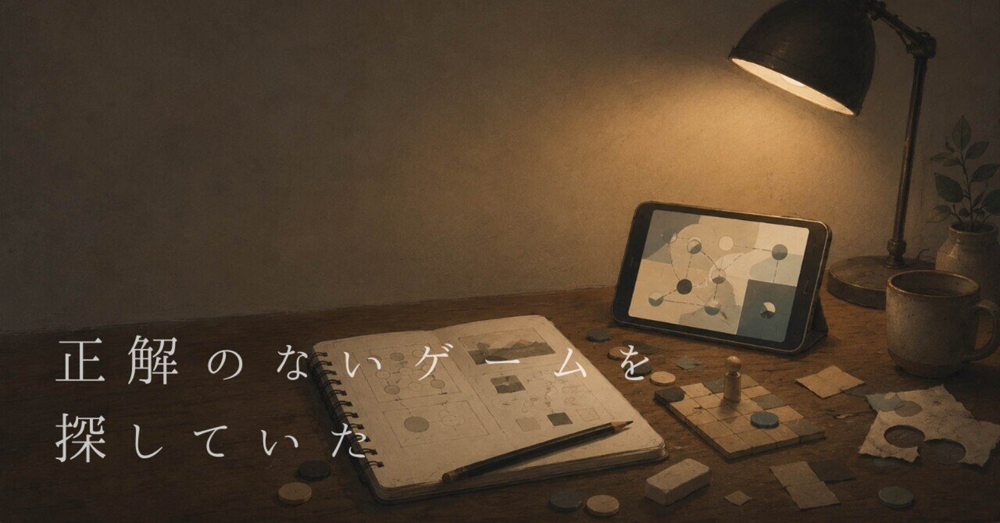

正解のないゲームを探していた
仕事を終えた夜、ソファに深く沈み込み、
いつものようにiPhoneを開く。
画面には、これまでに作りためてきた、
自分専用アプリのアイコンが並んでいる。
便利さを競うわけでも、
誰かの困りごとを解決するわけでもない。
ただ、自分が触りたいもの、
自分の気持ちが少し落ち着くものを探しているうちに、
いつの間にかゲームらしいものになっていた。
今回は、そんな自分専用のゲームを振り返ってみたい。
『FlipCoin』
指でコインを引っ張り、弾くだけのゲーム。
重力をなくし、衝突したときの跳ね返りを大げさにした。
コインが連鎖し、光の尾や波紋が画面いっぱいに広がる。
ゴールやスコアよりも、
弾いた後に起きる予測不能な光景を眺めていた。
『GearHopper』
回転する歯車から歯車へ小さなキャラクターを飛び移らせるゲーム。
物理的に正しいジャンプより、自分が気持ち良いと思える高さや、滞空時間を何度も調整した。
ゲームが進むと、真っ暗だった背景に巨大な街の夜景が少しずつ浮かび上がる。
回しているのか、回されているのか。
そんな感覚を閉じ込めた。
『AmberTime』
ウイスキーの樽に原酒を入れ、時間を待ちながら熟成を待つゲーム。
効率よく利益を出す最適解を見つけても、繰り返しているとただの作業になってしまった。
ウイスキーが蒸発していく「天使の分け前」や、棚の間を走るネズミなど、
本来は邪魔になってしまうものも取り入れたことで、少しだけ生活の気配が生まれた。
攻略するのではなく、その空間や時間を眺めるゲームになった。
 誰に何を売るか考えている戦場の外れに、小さな道具屋があります。そこで店を営んでいるのは、勇者ではなく、ひとりの店主です。「The Demon of Theseus」店主と客の取引ゲームです。引き際のヒリヒリ感店にやってくる客は様々です。旅を続ける勇者、さまようゴブリン、盗賊など。彼らとの取引は、「じゃんけん」と「ブラックジャック」…
誰に何を売るか考えている戦場の外れに、小さな道具屋があります。そこで店を営んでいるのは、勇者ではなく、ひとりの店主です。「The Demon of Theseus」店主と客の取引ゲームです。引き際のヒリヒリ感店にやってくる客は様々です。旅を続ける勇者、さまようゴブリン、盗賊など。彼らとの取引は、「じゃんけん」と「ブラックジャック」…『LogicCore』
名作落ちものパズルの感触を再現しようとしたが、
完成された本家の感触にならず、忠実な再現は諦めた。
そこから、落ちてくるものを論理回路の断片に変え、
すべてをきれいに片付けるのではなく、壊れかけたシステムを動かし続けるゲームになった。
再現を諦めたことで、ようやく自分が触りたいものが見えてきた。
『The Demon of Theseus』
戦場の外れにある道具屋の店主になるゲーム。
単に利益を求めるだけでなく、取引に危うさを足した。
強い武器を売れば儲かるが、世界のバランスが傾いてしまうかもしれない。
経営の正解と世界にとっての正解がずれていく、
引き際と後味を確かめるゲームになった。
『ORBIT』
宇宙の浮遊感を手元で触るため、加速を鈍くし、思った場所で止まれない操作感にした。
壊れた基地を修復すると、
管理AIも少しずつ言葉を取り戻していく。
基地を直しているのか。
AIの記憶を取り戻しているのか。
それとも、自分自身を修復しているのか。
曖昧なまま、宇宙を漂い続けるゲームになった。
振り返ってみて
どのゲームも、
最初からルールを考えて作ったものではなかった。
コインを弾く。
歯車を回す。
樽を置く。
宇宙船を漂わせる。
先に動くものを作り、
触りながら要素を足したり、削ったりしていった。
思い通りにならない動き。
少し危うい選択。
何も起きない待ち時間。
意味のない光や揺れ。
ゲームの正解を作っていたのではなく、
自分がもう一度触りたくなる瞬間を探していたのだと思う。
最近作成した、『真夜中コーラ』も、
「一番良いコーラ」ではなく、
「その日の気分を表すようなコーラ」ができれば。そんな気持ちでつくっていた。